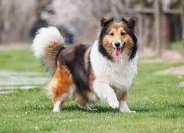

Molly

Molly is very playful and loves people. She will run up to a person any chance she gets, just to say hello.
Truman

Truman is a pretty mellow dog. He loves treats and walks and is a great companion.
Whiskers